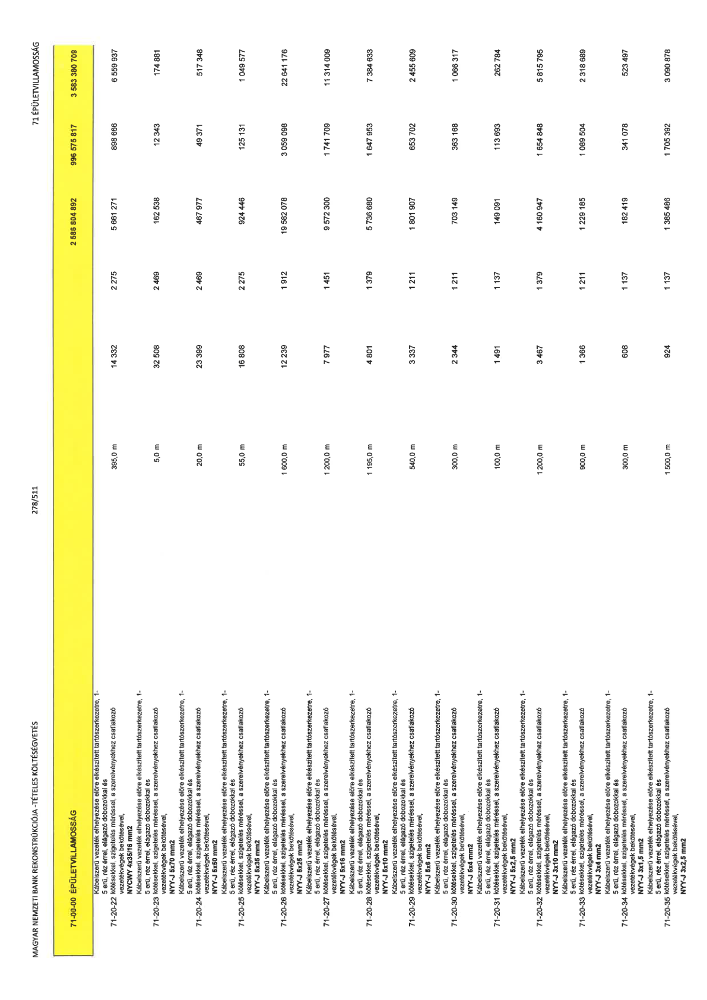

| Tétel | Menny. | Egys. | Anyag e.ár (net HUF) | Díj e.ár (net HUF) | Anyag összesen (net HUF) | Díj összesen (net HUF) | Anyag+Díj összesen (net HUF) |
|---|---|---|---|---|---|---|---|
| 71-00-00 ÉPÜLETVILLAMOSSÁG | NaN | NaN | 0 | 0 | 2 586 804 892 | 996 575 817 | 3 583 380 709 |
| Kábelszerű vezeték elhelyezése előre elkészített tartószerkezetre, 1- 5 erű, réz érrel, elágazó dobozokkal és kötésekkel, szigetelés méréssel, a szerelvényekhez csatlakozó vezetékvégek bekötésével, NYCWY 4x35/16 mm2 | 0 | 0 | 0 | 0 | 0 | 0 | 0 |
| 71-20-22 | 395,0 | m | 14 332 | 2 275 | 5 661 271 | 898 666 | 6 559 937 |
| Kábelszerű vezeték elhelyezése előre elkészített tartószerkezetre, 1- 5 erű, réz érrel, elágazó dobozokkal és kötésekkel, szigetelés méréssel, a szerelvényekhez csatlakozó vezetékvégek bekötésével, NYY-J 5x70 mm2 | 0 | 0 | 0 | 0 | 0 | 0 | 0 |
| 71-20-23 | 5,0 | m | 32 508 | 2 469 | 162 538 | 12 343 | 174 881 |
| Kábelszerű vezeték elhelyezése előre elkészített tartószerkezetre, 1- 5 erű, réz érrel, elágazó dobozokkal és kötésekkel, szigetelés méréssel, a szerelvényekhez csatlakozó vezetékvégek bekötésével, NYY-J 5x50 mm2 | 0 | 0 | 0 | 0 | 0 | 0 | 0 |
| 71-20-24 | 20,0 | m | 23 399 | 2 469 | 467 977 | 49 371 | 517 348 |
| Kábelszerű vezeték elhelyezése előre elkészített tartószerkezetre, 1- 5 erű, réz érrel, elágazó dobozokkal és kötésekkel, szigetelés méréssel, a szerelvényekhez csatlakozó vezetékvégek bekötésével, NYY-J 5x35 mm2 | 0 | 0 | 0 | 0 | 0 | 0 | 0 |
| 71-20-25 | 55,0 | m | 16 808 | 2 275 | 924 446 | 125 131 | 1 049 577 |
| Kábelszerű vezeték elhelyezése előre elkészített tartószerkezetre, 1- 5 erű, réz érrel, elágazó dobozokkal és kötésekkel, szigetelés méréssel, a szerelvényekhez csatlakozó vezetékvégek bekötésével, NYY-J 5x25 mm2 | 0 | 0 | 0 | 0 | 0 | 0 | 0 |
| 71-20-26 | 1 600,0 | m | 12 239 | 1 912 | 19 582 078 | 3 059 098 | 22 641 176 |
| Kábelszerű vezeték elhelyezése előre elkészített tartószerkezetre, 1- 5 erű, réz érrel, elágazó dobozokkal és kötésekkel, szigetelés méréssel, a szerelvényekhez csatlakozó vezetékvégek bekötésével, NYY-J 5x16 mm2 | 0 | 0 | 0 | 0 | 0 | 0 | 0 |
| 71-20-27 | 1 200,0 | m | 7 977 | 1 451 | 9 572 300 | 1 741 709 | 11 314 009 |
| Kábelszerű vezeték elhelyezése előre elkészített tartószerkezetre, 1- 5 erű, réz érrel, elágazó dobozokkal és kötésekkel, szigetelés méréssel, a szerelvényekhez csatlakozó vezetékvégek bekötésével, NYY-J 5x10 mm2 | 0 | 0 | 0 | 0 | 0 | 0 | 0 |
| 71-20-28 | 1 195,0 | m | 4 801 | 1 379 | 5 736 680 | 1 647 953 | 7 384 633 |
| Kábelszerű vezeték elhelyezése előre elkészített tartószerkezetre, 1- 5 erű, réz érrel, elágazó dobozokkal és kötésekkel, szigetelés méréssel, a szerelvényekhez csatlakozó vezetékvégek bekötésével, NYY-J 5x6 mm2 | 0 | 0 | 0 | 0 | 0 | 0 | 0 |
| 71-20-29 | 540,0 | m | 3 337 | 1 211 | 1 801 907 | 653 702 | 2 455 609 |
| Kábelszerű vezeték elhelyezése előre elkészített tartószerkezetre, 1- 5 erű, réz érrel, elágazó dobozokkal és kötésekkel, szigetelés méréssel, a szerelvényekhez csatlakozó vezetékvégek bekötésével, NYY-J 5x4 mm2 | 0 | 0 | 0 | 0 | 0 | 0 | 0 |
| 71-20-30 | 300,0 | m | 2 344 | 1 211 | 703 149 | 363 168 | 1 086 317 |
| Kábelszerű vezeték elhelyezése előre elkészített tartószerkezetre, 1- 5 erű, réz érrel, elágazó dobozokkal és kötésekkel, szigetelés méréssel, a szerelvényekhez csatlakozó vezetékvégek bekötésével, NYY-J 5x2,5 mm2 | 0 | 0 | 0 | 0 | 0 | 0 | 0 |
| 71-20-31 | 100,0 | m | 1 491 | 1 137 | 149 091 | 113 693 | 262 784 |
| Kábelszerű vezeték elhelyezése előre elkészített tartószerkezetre, 1- 5 erű, réz érrel, elágazó dobozokkal és kötésekkel, szigetelés méréssel, a szerelvényekhez csatlakozó vezetékvégek bekötésével, NYY-J 3x10 mm2 | 0 | 0 | 0 | 0 | 0 | 0 | 0 |
| 71-20-32 | 1 200,0 | m | 3 467 | 1 379 | 4 160 947 | 1 654 848 | 5 815 795 |
| Kábelszerű vezeték elhelyezése előre elkészített tartószerkezetre, 1- 5 erű, réz érrel, elágazó dobozokkal és kötésekkel, szigetelés méréssel, a szerelvényekhez csatlakozó vezetékvégek bekötésével, NYY-J 3x4 mm2 | 0 | 0 | 0 | 0 | 0 | 0 | 0 |
| 71-20-33 | 900,0 | m | 1 366 | 1 211 | 1 229 185 | 1 089 504 | 2 318 689 |
| Kábelszerű vezeték elhelyezése előre elkészített tartószerkezetre, 1- 5 erű, réz érrel, elágazó dobozokkal és kötésekkel, szigetelés méréssel, a szerelvényekhez csatlakozó vezetékvégek bekötésével, NYY-J 3x1,5 mm2 | 0 | 0 | 0 | 0 | 0 | 0 | 0 |
| 71-20-34 | 300,0 | m | 608 | 1 137 | 182 419 | 341 078 | 523 497 |
| Kábelszerű vezeték elhelyezése előre elkészített tartószerkezetre, 1- 5 erű, réz érrel, elágazó dobozokkal és kötésekkel, szigetelés méréssel, a szerelvényekhez csatlakozó vezetékvégek bekötésével, NYY-J 3x2,5 mm2 | 0 | 0 | 0 | 0 | 0 | 0 | 0 |
| 71-20-35 | 1 500,0 | m | 924 | 1 137 | 1 385 486 | 1 705 392 | 3 090 878 |
